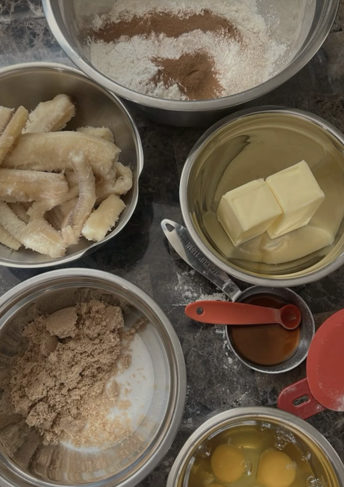

Home Page
Here Is The Ingredient List!
- Milk.
- Yeast. You can also use active dry yeast.
- Eggs. Large eggs are standard.
- Butter.
- Sugars. Granulated sugar goes in the dough. Brown sugar is in the filling.
- Salt.
- Flour. Bread flour will help the rolls have a fluffier, chewy but sturdier texture. If you don’t have bread flour, use all-purpose flour.
- Cinnamon. Use Saigon cinnamon in this filling.
- Heavy cream.
- Cream cheese. Full fat cream cheese is for the frosting.
- Powdered sugar.
- Maple or vanilla extract.
